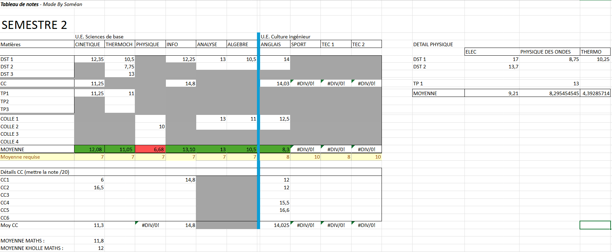
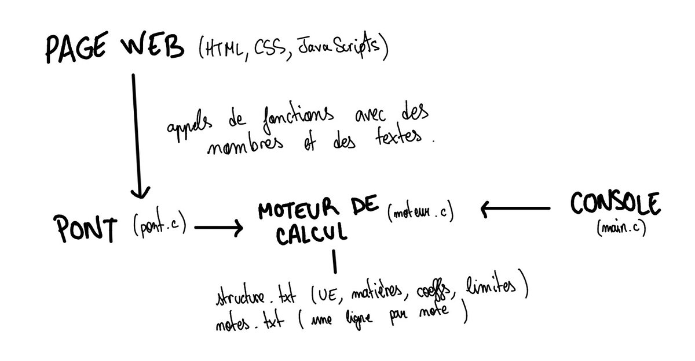

Projet perso · 2026 · En cours
Sonote
Une application en C pour suivre mes notes et calculer mes moyennes, avec une interface web accessible sur smartphone.
Introduction
Au cours de ma première année de CP2I, nos notes de DS, TP, khôlles, etc. nous étaient transmises par mail : c'était compliqué à gérer et à consulter. J'avais donc fait un tableur qui les répertoriait toutes. Sauf que c'était fastidieux, pas très esthétique, et surtout faux : une case sans note comptait comme un zéro. J'avais donc parfois des moyennes à 6 alors que j'avais bien plus.

C'est ainsi qu'est né Sonote, une application de suivi et de calcul de moyennes développée en C, avec une interface web accessible sur smartphone. Elle enregistre les notes selon leur type (DS, TP, khôlle, contrôle continu…), puis calcule automatiquement les moyennes par matière, par unité d'enseignement (UE) et sur le semestre.
Démarche
J'ai choisi de coder en C, car c'est le langage au programme de cette année et je voulais m'y entraîner. J'ai ensuite relevé les coefficients et les limites dans le document officiel de la formation (M3C) :
| UE | Coeff. | Matières (coeff., limite) | Limite UE |
|---|---|---|---|
| Maths-Info | 12 | Analyse (4) ; Algèbre (4) ; Info (4) | 7 |
| Physique-Chimie | 9 | Physique (5) ; Chimie (4) | 7 |
| Culture ingé | 5,5 | Anglais (2,5 ; 8) ; Sport (1,5 ; 8) ; TEC (1,5 ; 10) | 10 |
| Option | 3 | Réseau (3) | aucune |
Puis je les ai traduits en formules :
semestre validé et toutes les limites atteintes
S'ensuivent de longues heures de code sur console : calculs, alertes, sauvegarde dans un fichier, saisie robuste, etc. Puis j'ai séparé le moteur de l'affichage : le calcul ne contient plus aucun affichage, il peut donc être réutilisé ailleurs. Enfin, le passage au web : compilation du moteur en WebAssembly et page pour mobile.
Architecture

L'idée : un seul cerveau (le moteur en C), deux interfaces (la console et le web). Le moteur ne fait ni saisie ni affichage : il renvoie uniquement des valeurs ou des codes d'erreur.
Les points techniques dont je suis fier
- Structures de données. Note, Matiere et UE imbriquées ; un type Indice pour renvoyer « UE + matière ».
- Un format de fichier pensé. Les notes sont stockées avec des points-virgules, l'intitulé en dernier pour qu'il puisse contenir des espaces ; les points-virgules saisis dans un intitulé sont neutralisés pour ne pas casser le fichier.
- Configuration par fichier. Les UE, matières, coefficients et limites sont lus dans un fichier texte : je peux adapter l'appli au semestre suivant sans recompiler.
- Saisie robuste. Une mauvaise saisie (des lettres à la place d'un nombre) ne fait plus boucler le programme, grâce à la fonction vider_tampon.
- Gestion d'erreurs. Des codes de retour documentés ; le fichier de structure donne le numéro de la ligne fautive.
- Du C dans le navigateur. Compilation avec Emscripten ; la page ne dialogue avec le C que par des nombres et des adresses de textes.
Les difficultés rencontrées
- Une alerte incomplète. Elle ne signalait que la première matière fautive, ce qui ne suffit pas pour une interface. J'ai compris qu'il fallait répondre à la question « et celle-ci ? » pour chaque élément.
- Le point-virgule dans un intitulé, qui cassait le fichier.
- L'intitulé vide à cause du tampon (scanf puis fgets).
- Les moyennes « sans note », qui ne doivent pas valoir 0.
Ce que j'ai appris
- Structurer un programme en modules (déclarations dans un .h, code dans un .c).
- Penser aux cas limites avant de coder : liste vide, numéro hors limites, fichier mal formé.
- Séparer le calcul de l'affichage pour pouvoir changer d'interface.
- Utiliser Git au quotidien, et lire un document réglementaire pour en tirer des règles de calcul.
- Les bases de WebAssembly et du dialogue entre JavaScript et C.
Seul, et avec l'IA
J'ai écrit seul, de A à Z, la version console (calculs, limites, sauvegarde, saisie), avec l'aide de quelques ressources citées en bas de page (vidéos, articles, forums, sites, manuels).
Je me dois cependant d'être transparent : pour la partie web, l'IA m'a beaucoup épaulé. N'y connaissant rien, je lui ai demandé de m'expliquer comment fonctionnaient le pont WebAssembly et la page web. J'ai relu et compris chaque partie du code.
Sources
- Documentation de git commit (exemples)
- Documentation Emscripten : appeler du C depuis JavaScript
- MDN : les concepts de WebAssembly
- cppreference : fgets
- Pro Git, le livre officiel (en français)
- Claude Delannoy, Le livre du C premier langage : pour les vrais débutants en programmation